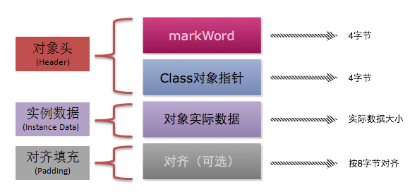
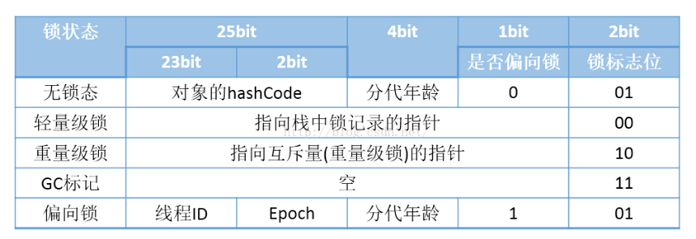

互斥锁特性
互斥性：同一时刻只有一个线程对需要同步的代码块进行访问
可见性：在锁被释放前，对变量进行的修改，对于随后获得该锁的线程可见
获取对象锁
同步代码块：
synchronized(this)、synchronized(类实例对象)，锁是小括号中的实例对象同步非静态方法：同步非静态方法，锁是当前对象的实例对象
获取类锁
同步代码块：
synchronized(类.class)，锁是小括号中的类对象（class对象）同步静态方法：
synchronized static method，锁是当前对象的类对象（class对象）
synchronized底层原理

32位虚拟机中对象头中字段如下

synchronize字节码
1 | public class SyncCode { |
1 | public void testSync(); |
1 | public synchronized void testS(); |
通过上述字节码，在使用synchronized块时，会使用
monitorenter和两个monitorexit来表示进入同步代码块和退出同步代码块，两个退出分别表示正常退出以及异常退出对于同步方法使用
ACC_SYNCHRONIZED来表示该方法是同步的，并且对当前对象实例上锁
synchronized性能提升（JDK6以后）
自旋锁：
让线程执行忙循环等待锁释放，不让出CPU。如果锁被其他线程长时间占用，会带来许多性能上的开销。自旋等待时间由PreBlockSpin控制
自适应自旋：
自旋次数不固定、由前一次在同一个锁上的自旋时间及锁的拥有者的状态来决定
锁消除：
1 | public void add(String str1, String str2) { |
上述代码中由于StringBuffer是一个局部变量，不可能被其他线程引用，所以sb不属于共享资源，JVM会自动消除内部的锁
锁粗化：
1 | public static String copyString(String target) { |
上述代码中并不是每次调用
append方法都加锁，而是只加一次，JVM通过扩大加锁的范围，扩大到append方法的外部，避免反复加锁和解锁
轻量级锁：
在代码进入同步块的时候，如果同步对象是无锁状态，则在当前线程中的栈帧中建立一个名为Lock Record的空间
拷贝对象头中Mark Word到Lock Record中
比较Mark Word中的信息与Lock Record中的信息是否一致
一致，将对象头中的锁标志位设置为轻量级锁
不一致，说明有其他线程在操作，升级为重量级锁
上述过程中3、4步骤是原子操作，通过操作系统实现同步
偏向锁：
如果一个线程获得了锁，那么锁就进入偏向模式，此时Mark Word的结构也变为偏向锁结构，当该线程再次请求锁时，无需再做任何同步操作，即获取锁的过程只需要检查Mark Word的锁标记位为偏向锁及当前线程Id等于Mark Word的ThreadId即可，这样就省去了大量有关锁申请的操作。
不适用于锁竞争比较激烈的多线程场合
synchronized锁膨胀
无锁 -> 偏向锁 -> 轻量级锁 -> 重量级锁